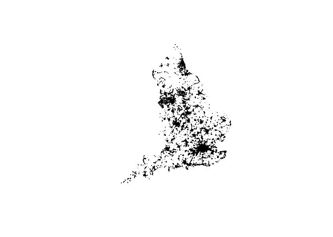
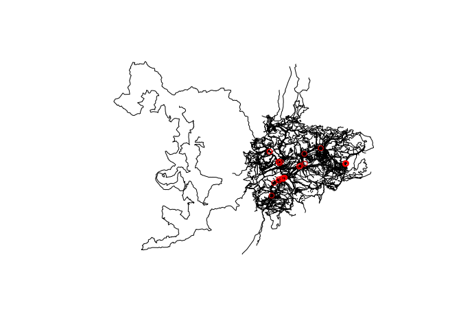
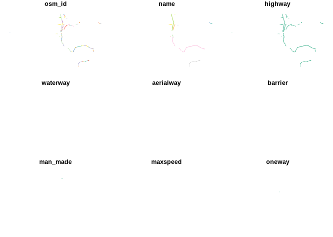
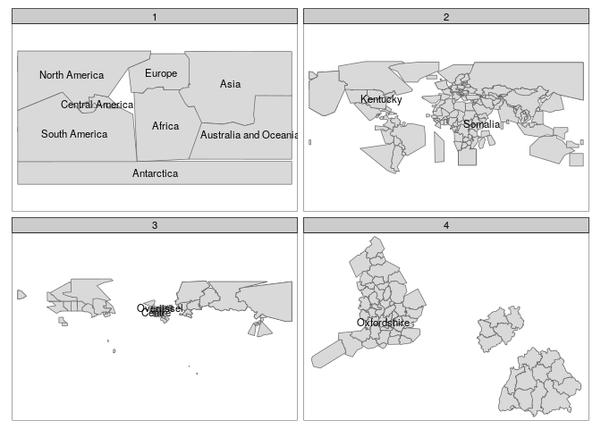

The goal of geofabrik is to make it easier for open source software users to access freely available, community created geographic data, in the form of OpenSteetMap data shipped by Geofabrik GmbH.
Why geofabrik?
osmdata provides an R interface to the Overpass API, which is ideal for downloading small OSM datasets. However, the API is rate limited, making it hard to download large datasets. As a case study, let’s try to download all cycleways in England:
library(osmdata)
cycleways_england = opq("England") %>%
add_osm_feature(key = "highway", value = "cycleway") %>%
osmdata_sf()
# Error in check_for_error(doc) : General overpass server error; returned:
# The data included in this document is from www.openstreetmap.org. The data is made available under ODbL. runtime error: Query timed out in "query" at line 4 after 26 seconds. The query hanged with an error message after around 10 seconds. The same query can be made with geofabrik as follows (not evaluated):
cycleways_england = get_geofabrik("England", key = "highway", value = "cycleway")
plot(sf::st_geometry(cycleways_england))
The package is designed to complement osmdata which has advantages over geofabrik for small datasets: osmdata is likely to be quicker for datasets less than ~10 MB, provides up-to-date data and has an intuitive interface. osmdata can provide data in a range of formats, while geofabrik only returns sf objects. On the other hand, geofabrik provides a fast way to download large OSM datasets in the highly compressed pbf format and read them in via the fast C library GDAL and the R package sf.
Installation
You can install the development version from GitHub with:
Usage
Give geofabrik the name of a geofabrik zone and it will download and import it. By default it imports the ‘lines’ layer, but any layer can be read-in. Behind the scenes, the function read_pbf(), a wrapper around sf::st_read() is used with configuration options to import additional columns from the .pbf files not imported by default, including maxspeed, lanes and oneway (the attributes to include can be set with attributes argument):
andorra_lines = get_geofabrik(name = "andorra", layer = "lines")
#> Data already detected in ~/hd/data/osm/Andorra.osm.pbf
#> Old attributes: attributes=name,highway,waterway,aerialway,barrier,man_made
#> New attributes: attributes=name,highway,waterway,aerialway,barrier,man_made,maxspeed,oneway,building,surface,landuse,natural,start_date,wall,service,lanes,layer,tracktype,bridge,foot,bicycle,lit,railway,footway
#> Using ini file that can can be edited with file.edit(/tmp/Rtmp0xtHAj/ini_new.ini)
names(andorra_lines)
#> [1] "osm_id" "name" "highway" "waterway"
#> [5] "aerialway" "barrier" "man_made" "maxspeed"
#> [9] "oneway" "building" "surface" "landuse"
#> [13] "natural" "start_date" "wall" "service"
#> [17] "lanes" "layer" "tracktype" "bridge"
#> [21] "foot" "bicycle" "lit" "railway"
#> [25] "footway" "z_order" "other_tags" "_ogr_geometry_"
andorra_point = get_geofabrik(name = "andorra", layer = "points", attributes = "shop")
#> Data already detected in ~/hd/data/osm/Andorra.osm.pbf
#> Old attributes: attributes=name,barrier,highway,ref,address,is_in,place,man_made
#> New attributes: attributes=name,barrier,highway,ref,address,is_in,place,man_made,shop
#> Using ini file that can can be edited with file.edit(/tmp/Rtmp0xtHAj/ini_new.ini)
names(andorra_point) # note the 'shop' column has been added
#> [1] "osm_id" "name" "barrier" "highway"
#> [5] "ref" "address" "is_in" "place"
#> [9] "man_made" "shop" "other_tags" "_ogr_geometry_"
plot(sf::st_geometry(andorra_lines))
plot(andorra_point[andorra_point$shop == "supermarket", ], col = "red", add = TRUE)
#> Warning in plot.sf(andorra_point[andorra_point$shop == "supermarket", ], :
#> ignoring all but the first attribute
The above code plotted lines representing roads and other linear features in Andorra, with an overlay of shops that are represented in OSM data. If there are no files available for a zone name, geofabrik will search for and import the nearest matching zone:
iow_lines = get_geofabrik(name = "isle wight")
#> Data already detected in ~/hd/data/osm/Isle of Wight.osm.pbf
#> Old attributes: attributes=name,highway,waterway,aerialway,barrier,man_made
#> New attributes: attributes=name,highway,waterway,aerialway,barrier,man_made,maxspeed,oneway,building,surface,landuse,natural,start_date,wall,service,lanes,layer,tracktype,bridge,foot,bicycle,lit,railway,footway
#> Using ini file that can can be edited with file.edit(/tmp/Rtmp0xtHAj/ini_new.ini)Take care: files downloaded from geofabrik.de can be large. You can find information on the geofabrik region defining the boundaries of the result with gf_find():
iow_gf_region = gf_find("isle wight")
plot(iow_gf_region)
#> Warning: plotting the first 9 out of 11 attributes; use max.plot = 11 to plot
#> all
If you want to use st_read() to read-in the .pbf files, e.g. to set additional query arguments, you can do so, as demonstrated below.
iow_gf_file = gf_filename(iow_gf_name)
iow_gf_file
#> [1] "~/hd/data/osm/Isle of Wight.osm.pbf"
file.exists(iow_gf_file)
#> [1] TRUE
iow_lines_cycle = read_pbf(dsn = iow_gf_file, "lines", key = "highway", value = "cycleway")
#> Old attributes: attributes=name,highway,waterway,aerialway,barrier,man_made
#> New attributes: attributes=name,highway,waterway,aerialway,barrier,man_made,maxspeed,oneway,building,surface,landuse,natural,start_date,wall,service,lanes,layer,tracktype,bridge,foot,bicycle,lit,railway,footway
#> Using ini file that can can be edited with file.edit(/tmp/Rtmp0xtHAj/ini_new.ini)
plot(iow_lines_cycle)
#> Warning: plotting the first 9 out of 27 attributes; use max.plot = 27 to plot
#> all
If you want even more control, you can used GDAL’s query argument via sf:
query = paste0("select highway from lines where highway = ",
"'cycleway' or highway = 'secondary' or highway = 'primary'")
iow_lines_subset = sf::st_read(iow_gf_file, layer = "lines", query = query)
#> Reading layer `lines' from data source `/mnt/57982e2a-2874-4246-a6fe-115c199bc6bd/data/osm/Isle of Wight.osm.pbf' using driver `OSM'
#> Simple feature collection with 1057 features and 1 field
#> geometry type: LINESTRING
#> dimension: XY
#> bbox: xmin: -1.565827 ymin: 50.58314 xmax: -1.083348 ymax: 50.76245
#> epsg (SRID): 4326
#> proj4string: +proj=longlat +datum=WGS84 +no_defs
plot(iow_lines_subset)
geofabrik zones
The package ships with a data frame representing all zones made available by the package. These can be interactively searched with the following command:
That will display the following table in the viewer:
| name | size_pbf | pbf_url |
|---|---|---|
| Africa | (3.5 GB) | http://download.geofabrik.de/africa-latest.osm.pbf |
| Antarctica | (29.0 MB) | http://download.geofabrik.de/antarctica-latest.osm.pbf |
| Asia | (7.6 GB) | http://download.geofabrik.de/asia-latest.osm.pbf |
| Australia and Oceania | (727 MB) | http://download.geofabrik.de/australia-oceania-latest.osm.pbf |
The following attributes are available from this file if you want more info about each geofabrik zone:
names(geofabrik_zones)
#> [1] "name" "size_pbf" "pbf_url" "page_url" "part_of"
#> [6] "continent" "country" "region" "subregion" "level"
#> [11] "geometry_url" "geometry"Each geographic level (continents, countries, regions and subregions) is shown in the map below, with a few of them named for reference.
# todo: tidy up geofabrik_zones data and this code chunk
library(tmap)
sel1 = is.na(geofabrik_zones$level)
geofabrik_zones$level[sel1] = 1
geofabrik_zones$label = ""
geofabrik_zones$label[sel1] = geofabrik_zones$name[sel1]
set.seed(9)
sel2 = sample(x = 1:nrow(geofabrik_zones), size = 5)
geofabrik_zones$label[sel2] = geofabrik_zones$name[sel2]
tm_shape(geofabrik_zones) +
tm_polygons() +
tm_text(text = "label") +
tm_facets(by = "level")
#> Warning: The shape geofabrik_zones is invalid. See sf::st_is_valid
#> Linking to GEOS 3.8.0, GDAL 3.0.2, PROJ 6.2.1
A couple of the countries, regions and sub regions available is shown below.
geofabrik_countries = geofabrik_zones[geofabrik_zones$level == 2, ]
knitr::kable(sf::st_drop_geometry(geofabrik_countries[1:2, 1:3]))| name | size_pbf | pbf_url | |
|---|---|---|---|
| 9 | Algeria | (85 MB) | http://download.geofabrik.de/africa/algeria-latest.osm.pbf |
| 10 | Angola | (46.6 MB) | http://download.geofabrik.de/africa/angola-latest.osm.pbf |
geofabrik_regions = geofabrik_zones[geofabrik_zones$level == 3, ]
knitr::kable(sf::st_drop_geometry(geofabrik_regions[1:2, 1:3]))| name | size_pbf | pbf_url | |
|---|---|---|---|
| 238 | Chūbu region | (289 MB) | http://download.geofabrik.de/asia/japan/chubu-latest.osm.pbf |
| 239 | Chūgoku region | (130 MB) | http://download.geofabrik.de/asia/japan/chugoku-latest.osm.pbf |
geofabrik_subregions = geofabrik_zones[geofabrik_zones$level == 4, ]
knitr::kable(sf::st_drop_geometry(geofabrik_subregions[1:2, 1:3]))| name | size_pbf | pbf_url | |
|---|---|---|---|
| 365 | Regierungsbezirk Freiburg | (113 MB) | http://download.geofabrik.de/europe/germany/baden-wuerttemberg/freiburg-regbez-latest.osm.pbf |
| 366 | Regierungsbezirk Karlsruhe | (105 MB) | http://download.geofabrik.de/europe/germany/baden-wuerttemberg/karlsruhe-regbez-latest.osm.pbf |